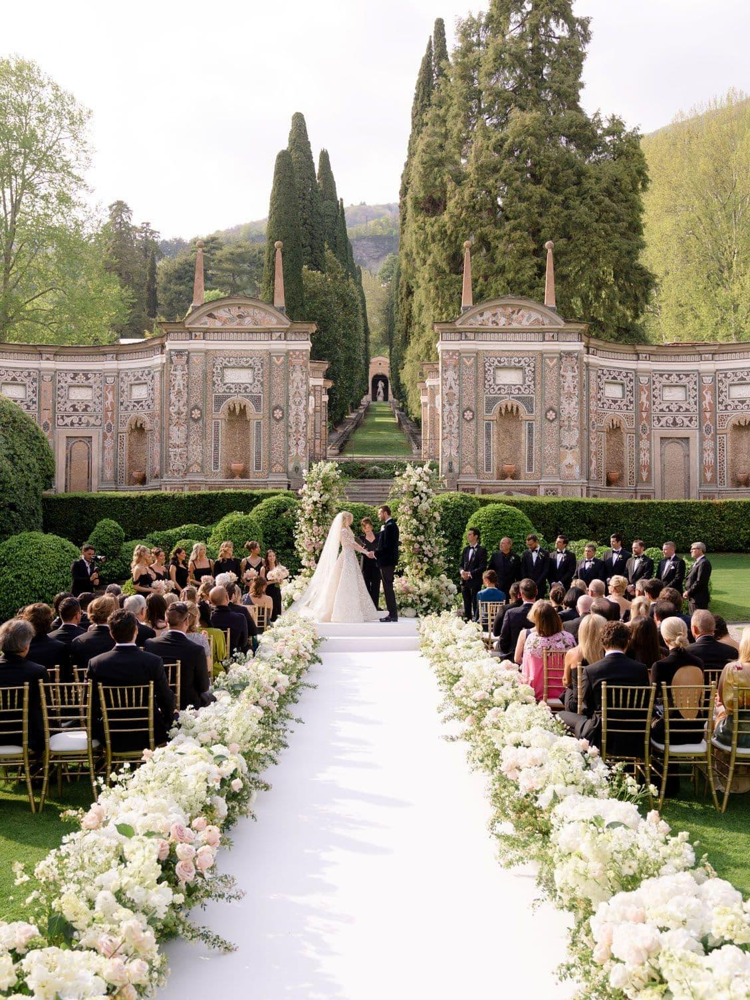

ჯვრისწერა
ოზურგეთის ღვთისმშობლის მიძინების
საკათედრო ტაძარი

მოხარულები ვართ, რომ ჩვენი ამბის ნაწილი ხართ
ერთი სიყვარული. ერთი განსაკუთრებული დღე.
14 ნოემბერი, 2026 · შაბათი
ჩვენ ვქორწინდებით
14 ნოემბერი, 2026
სიხარულით გიწვევთ ჩვენი სიყვარულის
ყველაზე განსაკუთრებულ დღეს.
შეინახეთ თარიღი
ჩვენს დიდ დღემდე დარჩა
14 ნოემბერი · 13:00 · საქართველოს დროით
დღე, რომელსაც ერთად გავიხსენებთ
დააჭირეთ „მაჩვენე გზა“ — მარშრუტი პირდაპირ გაიხსნება
ოზურგეთის ღვთისმშობლის მიძინების
საკათედრო ტაძარი
ოზურგეთის იუსტიციის სახლი
იოანე პეტრიწის ქუჩა
ბათუმი
რესტორანი კრისტალ ჰოლი
ჩვენი დღის განწყობა
ყვავილები, თბილი სინათლე და თქვენ — ჩვენ გვერდით.
საცნობარო გალერეა · წყვილის პირადი ფოტოები დაემატება მოგვიანებით